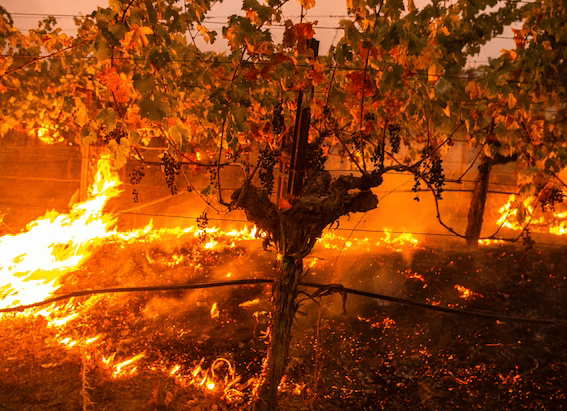

NATIONAL GEOGRAPHIC
Inside the Irish ‘hell caves’ where Halloween was born
TRAVEL
In the middle of a field in a lesser known part of Ireland is a large mound where sheep wander and graze freely. Had they been in that same location centuries ago, these animals might have been stiff with terror, held aloft by chanting, costumed celebrants while being sacrificed to demonic spirits that were said to inhabit nearby Oweynagat cave.
Rooted in lore
Spread across more than two square miles of rich agricultural land, Rathcroghan encompasses 240 archaeological sites, dating back 5,500 years. They include burial mounds, ring forts (settlement sites), standing stones, linear earthworks, an Iron Age ritual sanctuary and Oweynagat, the so-called gate to hell.
More than 2,000 years ago, when Ireland’s communities seem to have worshipped nature and the land itself, it was here at Rathcroghan that the Irish New Year festival of Samhain (SOW-in) was born, says archaeologist and Rathcroghan expert Daniel Curley. In the 1800s, the Samhain tradition was brought by Irish immigrants to the United States, where it morphed into the sugar overload that is American Halloween.
Dorothy Ann Bray, a retired associate professor at McGill University and an expert in Irish folklore, explains that pre-Christian Irish divided each year into summer and winter. Within that framework were four festivities. Imbolc, on February 1, was a festival that coincided with lambing season. Bealtaine, on May 1, marked the end of winter and involved customs like washing one’s face in dew, plucking the first blooming flowers, and dancing around a decorated tree. August 1 heralded Lughnasadh, a harvest festival dedicated to the god Lugh and presided over by Irish kings. Then on October 31 came Samhain, when one pastoral year ended and another began.
Rathcroghan was not a town, as Connaught had no proper urban centers and consisted of scattered rural properties. Instead, it was a royal settlement and a key venue for these festivals. During Samhain, in particular, Rathcroghan was a hive of activity focused on its elevated temple, which was surrounded by burial grounds for the Connachta elite.
Those same privileged people may have lived at Rathcroghan. The remaining, lower class Connachta communities resided in dispersed farms and descended on the site only for festivals. At those lively events they traded, feasted, exchanged gifts, played games, arranged marriages, and announced declarations of war or peace.
Festivalgoers also may have made ritual offerings, possibly directed to the spirits of Ireland’s otherworld. That murky, subterranean dimension, also known as Tír na nÓg (Teer-na-nohg), was inhabited by Ireland’s immortals, as well as a myriad of beasts, demons, and monsters. During Samhain, some of these creatures escaped via Oweynagat cave
“Samhain was when the invisible wall between the living world and the otherworld disappeared,” says Mike McCarthy, a Rathcroghan tour guide and researcher who has co-authored several publications on the site. “A whole host of fearsome otherworldly beasts emerged to ravage the surrounding landscape and make it ready for winter.”
Thankful for the agricultural efforts of these spirits but wary of falling victim to their fury, the people protected themselves from physical harm by lighting ritual fires on hilltops and in fields. They disguised themselves as fellow ghouls, McCarthy says, so as not to be dragged into the otherworld via the cave.
Becoming a UNESCO site
This policy of preserving Rathcroghan’s integrity and authenticity extends to tourism. Despite its significance, Rathcroghan is one of Ireland’s less frequented attractions, drawing some 22,000 visitors a year compared with more than a million at the Cliffs of Moher. That may not be the case had it long ago been heavily marketed as the “Birthplace of Halloween,” Curley says. But there is no Halloween signage at Rathcroghan or in Tulsk, the nearest town.
Rathcroghan’s renown should soar, however, if Ireland is successful in its push to make it a UNESCO World Heritage site. The Irish Government has included Rathcroghan as part of the “Royal Sites of Ireland,” which is on its newest list of locations to be considered for prized World Heritage status. The global exposure potentially offered by UNESCO branding would likely attract many more visitors to Rathcroghan.
But it seems unlikely this historic jewel will be re-packaged as a kitschy Halloween tourist attraction. “If Rathcroghan got a UNESCO listing and that attracted more attention here that would be great, because it might result in more funding to look after the site,” Curley says. “But we want sustainable tourism, not a rush of gimmicky Halloween tourism.”
Comments :
- john Very good
- john Very good
Leave a Reply
Your email address will not be published. Required fields are marked*
Related posts:
-
 Unlocking the secrets of the North American monsoon
Unlocking the secrets of the North American monsoonDeath Valley is famously the hottest and driest place in North America, recording less than two inches of rainfall a year. But earlier this month, the California desert nearly broke its single-day
View article -
How the West’s wineries are battling ruinous wildfire smoke
As dawn breaks at the Sokol Blosser Winery in Dayton, Oregon, Alex Sokol Blosser is already preparing for that day’s harvest of pinot noir wine grapes.
View article -
 Polluters are using forests as ‘carbon offsets.’ Climate change has other plans.
Polluters are using forests as ‘carbon offsets.’ Climate change has other plans.On July 6, 2021, lightning ignited a fire in the Fremont-Winema National Forest of southern Oregon, in an area packed with dead trees from a mountain pine-beetle outbreak. Fueled by drought, the Bootleg fire exploded
View article